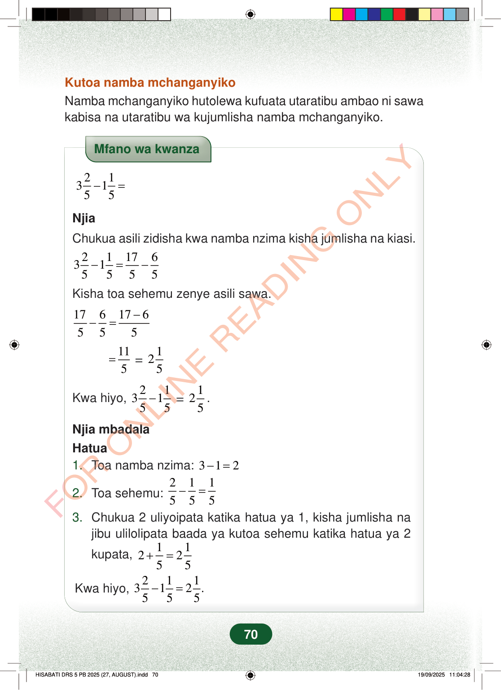

Kutoa namba mchanganyikoNamba mchanganyiko hutolewa kufuata utaratibu ambao ni sawakabisa na utaratibu wa kujumlisha namba mchanganyiko.Mfano wa kwanza213155−=NjiaChukua asili zidisha kwa namba nzima kisha jumlisha na kiasi.21176315555−=−Kisha toa sehemu zenye asili sawa.176176555−−==115=125Kwa hiyo,=213155−125.Njia mbadalaHatua1.Toa namba nzima:312−=2.Toa sehemu:211555−=3.Chukua 2 uliyoipata katika hatua ya 1, kisha jumlisha najibu ulilolipata baada ya kutoa sehemu katika hatua ya 2kupata,112255+=Kwa hiyo,211312.555−=70
Kutoa namba mchanganyiko Namba mchanganyiko hutolewa kufuata utaratibu ambao ni sawa kabisa na utaratibu wa kujumlisha namba mchanganyiko.
Mfano wa kwanza
2 1 3 1 5 5 − =
Njia
Chukua asili zidisha kwa namba nzima kisha jumlisha na kiasi.
2 1 17 6 3 1 5 5 5 5 − = −
Kisha toa sehemu zenye asili sawa.
17 6 17 6 5 5 5 − − =
11 5 =
1 25
Kwa hiyo,
2 1 3 1 5 5 −
1 25 .
Njia mbadala
Hatua 1. Toa namba nzima: 3 1 2 −=
2. Toa sehemu: 2 1 1 5 5 5 − =
3. Chukua 2 uliyoipata katika hatua ya 1, kisha jumlisha na jibu ulilolipata baada ya kutoa sehemu katika hatua ya 2
kupata, 1 1 2 2 5 5 + =
Kwa hiyo, 2 1 1 3 1 2 . 5 5 5 − =
70
Kutoa namba mchanganyikoNamba mchanganyiko hutolewa kufuata utaratibu ambao ni sawa kabisa na utaratibu wa kujumlisha namba mchanganyiko.Mfano wa kwanza<math><mrow><mn>3</mn><mfrac><mn>2</mn><mn>5</mn></mfrac><mo>−</mo><mn>1</mn><mfrac><mn>1</mn><mn>5</mn></mfrac><mo>=</mo></mrow></math>NjiaChukua asili zidisha kwa namba nzima kisha jumlisha na kiasi.<math><mrow><mn>3</mn><mfrac><mn>2</mn><mn>5</mn></mfrac><mo>−</mo><mn>1</mn><mfrac><mn>1</mn><mn>5</mn></mfrac><mo>=</mo><mfrac><mn>17</mn><mn>5</mn></mfrac><mo>−</mo><mfrac><mn>6</mn><mn>5</mn></mfrac></mrow></math>Kisha toa sehemu zenye asili sawa.<math><mrow><mfrac><mn>17</mn><mn>5</mn></mfrac><mo>−</mo><mfrac><mn>6</mn><mn>5</mn></mfrac><mo>=</mo><mfrac><mrow><mn>17</mn><mo>−</mo><mn>6</mn></mrow><mn>5</mn></mfrac></mrow></math><math><mrow><mo>=</mo><mfrac><mn>11</mn><mn>5</mn></mfrac><mo>=</mo><mn>2</mn><mfrac><mn>1</mn><mn>5</mn></mfrac></mrow></math>Kwa hiyo, <math><mrow><mn>3</mn><mfrac><mn>2</mn><mn>5</mn></mfrac><mo>−</mo><mn>1</mn><mfrac><mn>1</mn><mn>5</mn></mfrac><mo>=</mo><mn>2</mn><mfrac><mn>1</mn><mn>5</mn></mfrac></mrow></math>.Njia mbadalaHatua1.Toa namba nzima: <math><mrow><mn>3</mn><mo>−</mo><mn>1</mn><mo>=</mo><mn>2</mn></mrow></math>2.Toa sehemu: <math><mrow><mfrac><mn>2</mn><mn>5</mn></mfrac><mo>−</mo><mfrac><mn>1</mn><mn>5</mn></mfrac><mo>=</mo><mfrac><mn>1</mn><mn>5</mn></mfrac></mrow></math>3.Chukua 2 uliyopata katika hatua ya 1, kisha jumlisha na jibu ulilolipata baada ya kutoa sehemu katika hatua ya 2 kupata, <math><mrow><mn>2</mn><mo>+</mo><mfrac><mn>1</mn><mn>5</mn></mfrac><mo>=</mo><mn>2</mn><mfrac><mn>1</mn><mn>5</mn></mfrac></mrow></math>Kwa hiyo, <math><mrow><mn>3</mn><mfrac><mn>2</mn><mn>5</mn></mfrac><mo>−</mo><mn>1</mn><mfrac><mn>1</mn><mn>5</mn></mfrac><mo>=</mo><mn>2</mn><mfrac><mn>1</mn><mn>5</mn></mfrac></mrow></math>.